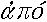
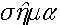

E.B.
Poulton (1890)
extracts
from: The Colours of Animals. London: Kegan Paul, Trench, Trübner
& Co Ltd
Poulton was the
first to recognize the possibility of frequency-dependent selection,
pp. 46-47, under the heading of "Dimorphism in Lepidopterous larvae":
If we breed from moths developed from the green larvae of,
e.g., the Large Emerald, the larvae in the next generation are chiefly
green, and after several generations there is little doubt that the brown
form would become excessively rare; so also the green form would disappear
if we bred from the brown varieties. But in nature both forms are
common, and therefore it is certain that both must be advantageous to the
species, or one of them would quickly disappear. I believe that it
is a benefit to the species that some of its larvae should resemble brown
and others green catkins, instead of all of them resembling either brown
or green. In the former case the foes have a wider range of objects
for which they may mistake the larvae, and the search must occupy more
time, for equivalent results, than in the case of other species which are
not dimorphic.
... but no-one's perfect -- group
selectionist thinking from pp. 160-161, under the heading of "The
value of Warning Colours"
At first sight the existence of this group [of colours] seems
to be a difficulty in the way of the general applicability of the theory
of natural selection. Warning Colours appear to benefit the would-be
enemies rather than the conspicuous forms themselves, and the origin and
growth of a character intended solely for the advantage of some other species
cannot be explained by the theory of natural selection. But the conspicuous
animal is greatly benefited by its Warning Colours. If it resembled
its surroundings like the members of the other class, it would be liable
to a great deal of accidental or experimental tasting, and there would
be nothing about it to impress the memory of an enemy, and thus prevent
the continuous destruction of individuals. The object of Warning
Colours is to assist the education of enemies, enabling them to easily
learn and remember the animals which are to be avoided. The great
advantage conferred upon the conspicuous species is obvious when it is
remembered that such an easy and successful education means an education
involving only a small sacrifice of life.
Selection against rarity
in warning colours, ... almost! From pp. 186, under the heading
"The causes which have determined the resemblance between between Warning
Colours in different Insects"
Hence the causes which determine the frequent repetition of
the same colours and markings in distasteful forms are as follows: (1)
The fact that a limited number of colours and patterns are especially efficient
in attracting the attention of enemies, and in thus facilitating their
education; (2) the fact that the education of enemies is also rendered
easy by requiring them to learn only a small number of patterns and colours;
(3) the great additional advantage conferred by trading upon the reputation
of a well-known and much-feared or much-disliked insect.
Poulton provided strong
support for Darwin's sexual selection theory for male flamboyance
against Wallace's natural selection alternative. Evidence for females
choosing aesthetically pleasing males (p. 297: "Sexual Selection tested
by the courtship of Spiders") and against Wallace's alternatives (example
headings: p. 316 "The necessity for Recognition can never explain the aesthetic
value of the results produced", p. 322 "The hypothesis that sexual colouring
is due to a surplus of vitality or is developed in relation to underlying
structures"). There follows this summary: pp. 334-335, under the
heading "The evidence for the gradual development of pattern suggests
selective breeding"
The steps by which some of the most elaborate and wonderful
appearances have arisen, are traced by Mr. Darwin in the most complete
and convincing manner. When we look at the marvellous eyes upon the
train of a Peacock, or the more beautiful markings on the feathers of the
male Argus Pheasant, it seems impossible that so wonderful and complete
a result can have been produced by the aesthetic preferences of female
birds. And yet Mr. Darwin shows the relation between these characters
and much simpler markings on other parts of the surface. He proves
that the one has been derived from the other by gradual modification, and
he points to traces of the original marking which persist in the complex
appearance to which it has given rise. Such facts, while eminently
suggestive of the progressive development of simple into complex markings
by some selective agency, seem to be unexplained by any other theory. It
is impossible to understand how any necessities for recognition, any changes
in the internal organs, any increasing vitality, could cause the one form
of marking to develop into the other, along lines which correspond with
the attainment of a gradually increasing aesthetic effect.
Poulton was fond of coining new terms from
Greek roots. He coined the term "aposematism"
for warning colours, along with many other terms some of which are
still in use today such as "epigamic". In a fold-out appendix table
from the end of the book (after p. 340, entitled "The Colours of Animals
Classified according to their Uses"):
Aposematic colours
= Warning Colours (,
away;
, sign)
NOUN: Aposeme
DEFINITION: An appearance
which warns off enemies because
it denotes something unpleasant
or dangerous.
Back to: E.B.
Poulton